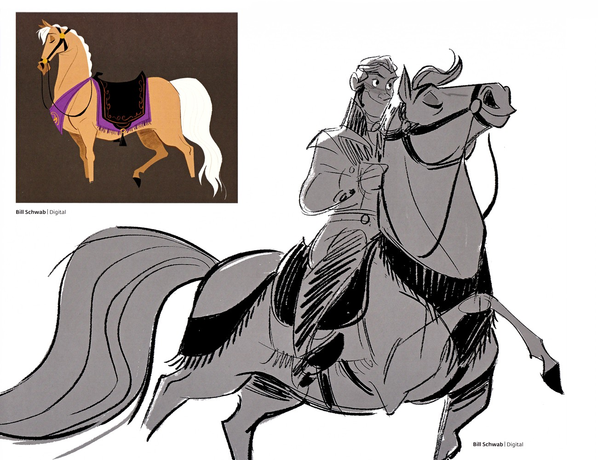
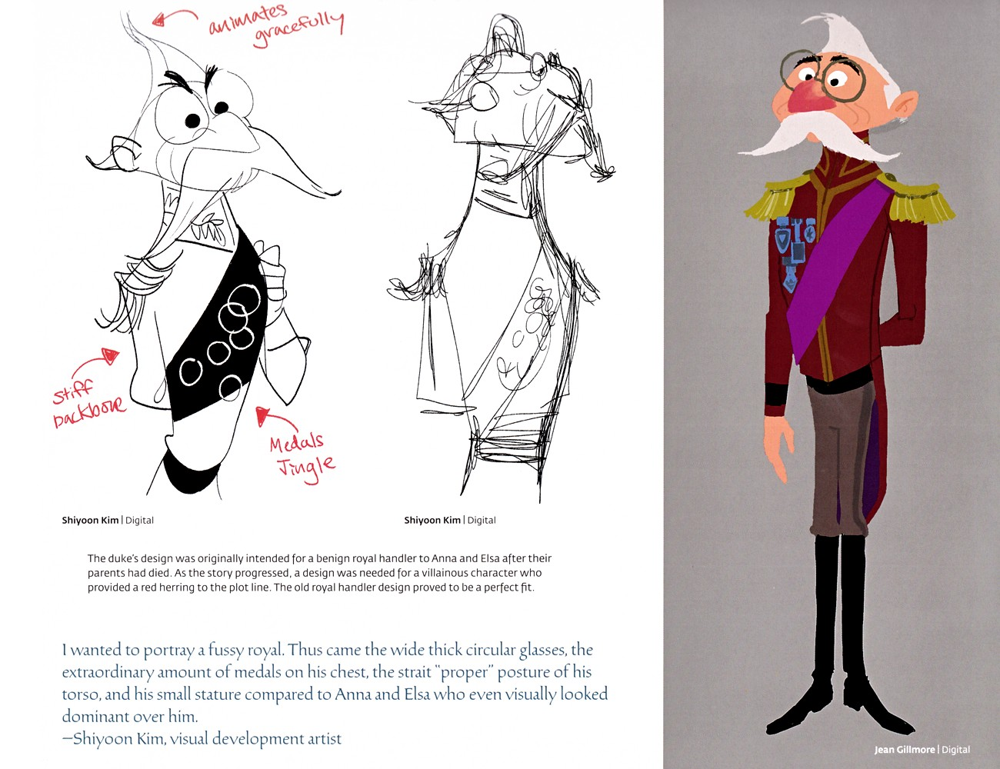
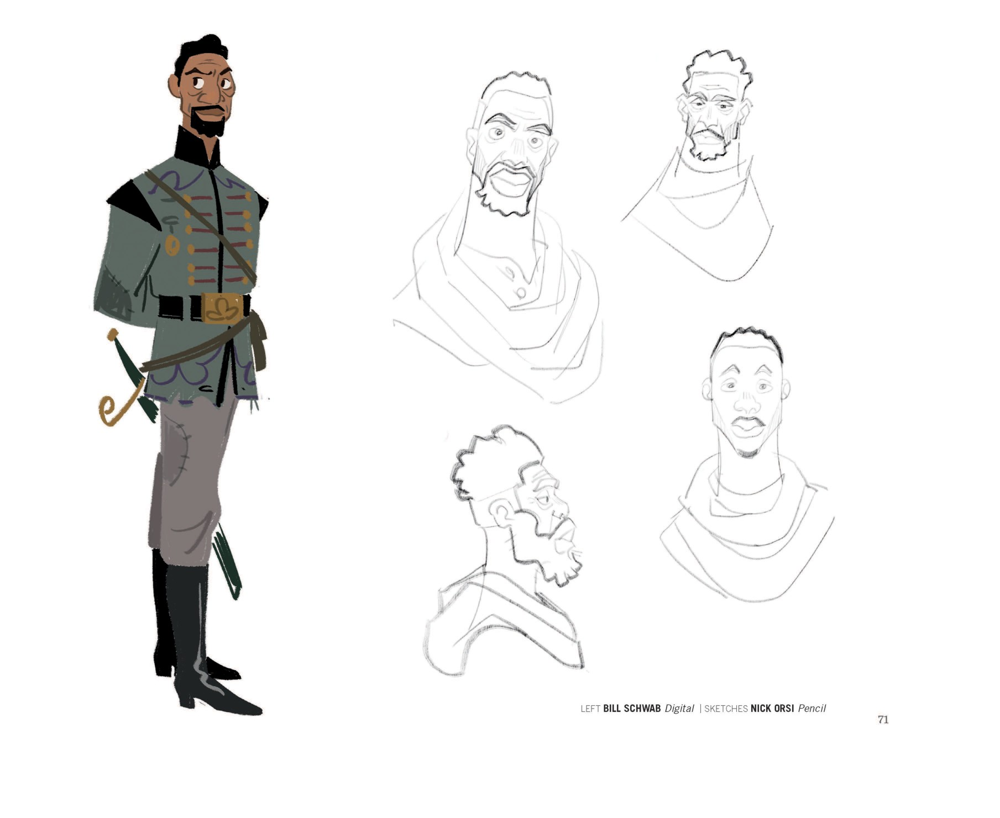
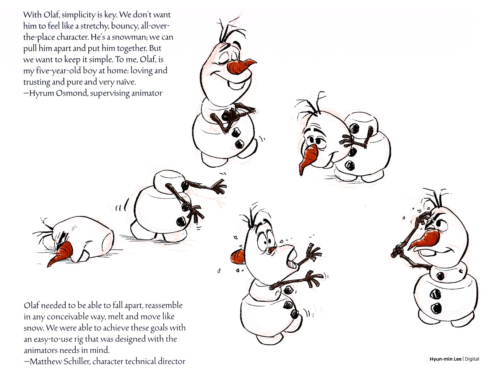
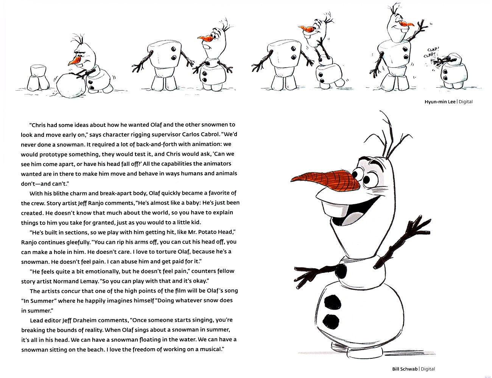
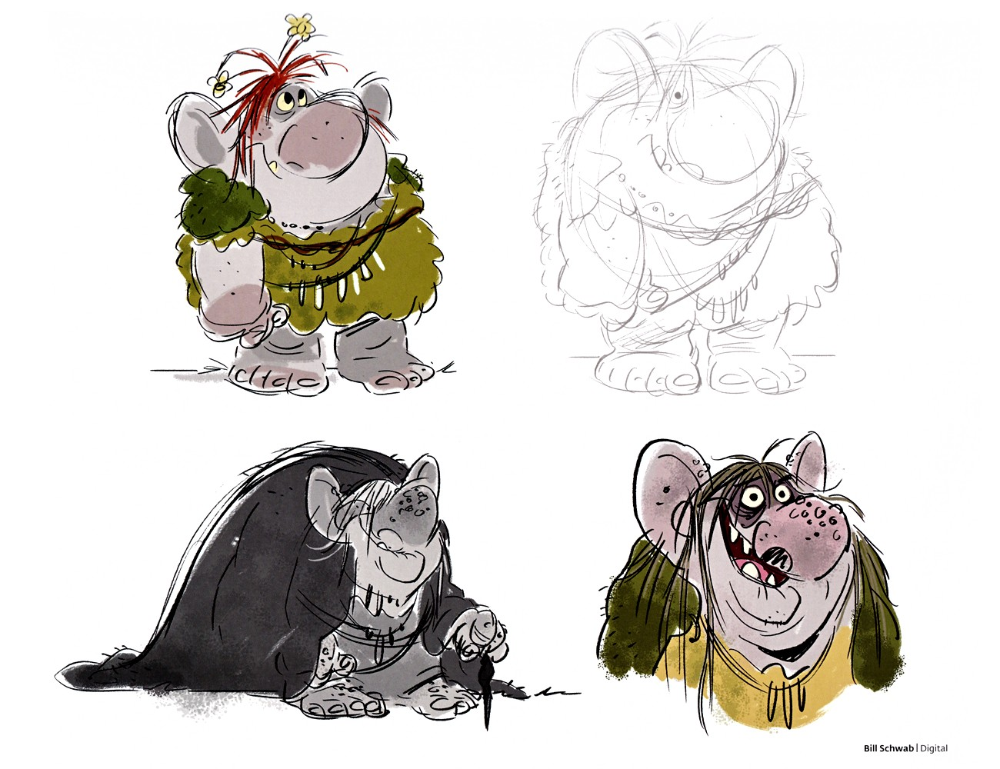
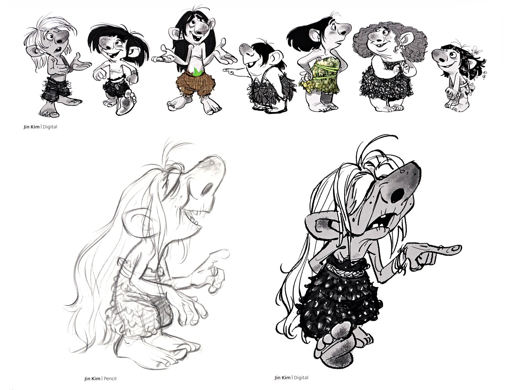
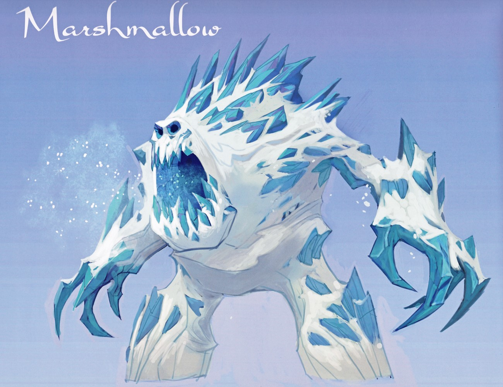
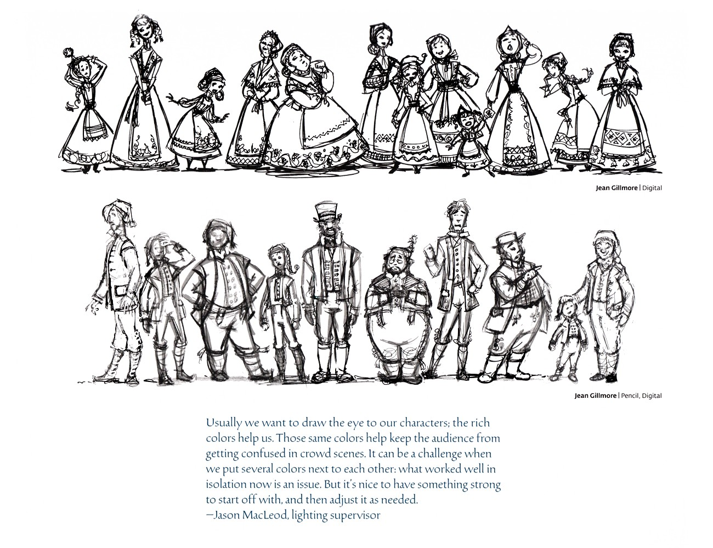
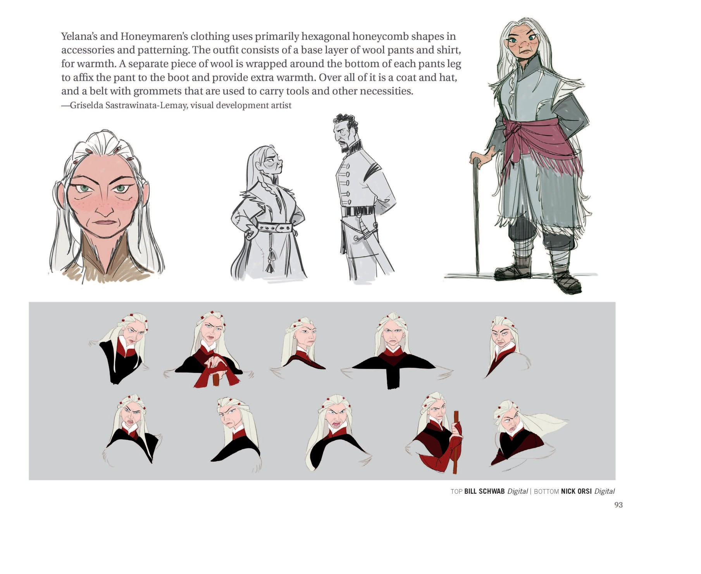

👥 角色 · 设定集精选
配角 · 设定集精选
汉斯、公爵、克里斯托夫、斯文、雪宝、巨魔与雪怪的原书设定页
F1·F2
主电影
中/英
双语
⚔️ 汉斯与威塞尔顿公爵

Hans 服装探索草图
本页为 Hans 五幅早期服装方向的探索：高领黑夹克配绿黄马甲、红发侧颜配米色军装、绿军服紫披风缀勋章、冷灰调阴险微笑头像、高领肩章全套军装。角色设计总监 Bill Schwab 的引语点出设计难点——既要覆盖其全部性格面向，又绝不能向观众泄露底牌。（F1设定集原页）

Hans 造型定稿与灵感
本页由 Bill Schwab 绘制：左侧 Hans 蓄鬓角、高领、狡黠微笑的侧颜；中央与 Anna 牵手对视；右侧加冕制服全彩转圈图（灰外套、蓝马甲长裤、洋红领结、金绶带、佩剑）。文字说明其服装灵感来自传统短腰 bunad（挪威民族服饰），黑翻领与衣领赋予英雄气概，肩章与绶带增添王子仪态。（F1设定集原页）

Hans 的坐骑
本页为 Hans 坐骑设定：左上为棕色素色（palomino）骏马着色图，白鬃白尾，披紫黑配金边的鞍毯；下方为 Hans 策马奔驰的大动作草图，发丝与衣摆飞扬。两幅均署 Bill Schwab。（F1设定集原页）

威塞尔顿公爵设计演变
公爵的设计最初是为安娜与艾莎父母双亡后、温和的皇家管事而准备的；随着剧情推进，需要一个作为"红鲱鱼"的反派角色，旧管事设计恰好契合。Shihyoon Kim 自述：用又宽又厚的圆眼镜、胸前大量勋章、笔挺"端正"的躯干姿态，以及相比安娜与艾莎明显矮小的身量，来塑造一个挑剔的皇家形象。（F1设定集原页）

"Mattias" 角色内页（造型变体 + 草图）
Mattias 角色的年龄/造型变体研究；Nick Orsi 的多张头像草图展示不同年龄与形象方案。（F2设定集原页）
🦌 克里斯托夫与斯文

克里斯托夫角色设定（二）/ Kristoff — Character Design (Part 2)
续上页：海考克称克里斯托夫想做理想型却自知不及、因而"用力过猛"，会紧张地反复摘戴帽子；并提醒 CG 中需让绑定（rig）支持帽子作为布料脱戴。画面为金镇（Jin Kim）所绘两幅针织帽头像速写与甩麻袋全身动作图，及比尔·施瓦布（Bill Schwab）数字稿。（F1设定集原页）

Sven 驯鹿早期草图
展示 Sven 的灰度研究与卡通化 caricature，体现角色从写实写生（带鞍袋吃草）到个性夸张（黄色背包、咧嘴大笑）的推敲。由视觉开发艺术家 Bill Schwab 以数字方式绘制，属角色外形确立前的探索性草图。（F1设定集原页）

Sven 上色稿
呈现 Sven 侧身全身上色稿，已配雪橇挽具，背景为冷调淡蓝。故事艺术家 Clio Chiang 调侃 Sven 看起来像只矮胖的动物，却是她最爱的驯鹿，反映团队对角色亲和力的喜爱。（F1设定集原页）

Sven 涂鸦与 Kristoff 雪橇早期设计
上栏是 Paul Briggs 随手画的驯鹿涂鸦，含一只幼鹿并手写字标注"one horn?!""REINDEER""SAGE"。下栏是 Kristoff 木质雪橇的早期设计，雕有民间 folk 纹样、折好的蓝毯与可运冰的滑板；文字说明 Kristoff 作为"采冰人"的设定后期才确定，故雪橇被改造以装运冰块。（F1设定集原页）
⛄ 雪宝

Olaf 早期概念与融化研究
左为圆润身体、担忧表情、树枝手臂的早期 Olaf；右为裂头、戴睡帽、围围巾三种变体，下方是融化成水洼的四格连续草图，均出自 Bill Schwab。视觉开发 Victoria Ying 引述 John Lasseter 对"材料真实感"的坚持：Olaf 的臂与眉皆为树枝，动画师挑战在于把形状推到极致仍让观众相信它们是树（F1设定集原页）

Olaf 动作姿态与绑定思路
supervising animator Hyrum Osmond 强调 Olaf 的"简洁"原则——不希望他像弹力卡通，要有雪人可被拆装的本质，并把他比作家中五岁纯真信赖的男孩。Hyun-min Lee 的一圈姿态草图描绘 Olaf 趴地、重组、翻滚、受惊、咬自己树枝手臂等。角色技术指导 Matthew Schill（F1设定集原页）

Olaf 拆解重组研究
顶部是 Hyun-min Lee 绘制的 Olaf 逐格自我重组序列（伴小雪人鼓掌），右下为 Bill Schwab 的完成墨线稿。绑定主管 Carlos Cabrol 回忆 Chris（Buck）早期便对雪人造型与动作有设想，团队经反复原型与测试，把动画师想要的"拆解、掉头"等能力都做进绑定。故事艺术家 Jeff R（F1设定集原页）

"Olaf" 分镜页（When I Am Older）
Olaf 主题曲《When I Am Older》相关的故事板序列，展示他独自在魔法森林里遇到元素精灵制造的奇异现象（巨石、火、冰泉等）。（F2设定集原页）
🌿 巨魔与雪怪

Troll 角色概念（多角色）/ Troll Character Concepts
四幅巨魔角色概念（彩色与铅笔）：红发缀花、穿绿苔裙的女巨魔；裹暗色毛斗篷的佝偻巨魔；以及 wild hair、戴项链、咧嘴笑的巨魔。由 Bill Schwab 绘制，呈现巨魔群体在性别、体型与气质上的多样化尝试。（F1设定集原页）

Troll 动画姿态研究 + 设计定调
上栏为 Dale Baer 以红铅笔绘制的 energic 小巨魔动画姿态研究（蜷缩翻滚、奔跑、比划、蹲伏）。正文说明巨魔进入制作流程较晚，设计须快速而确定：先确立"圆石"整体造型概念，再攻服装难题；历经多种有机花卉纹理探索，最终选定带螺旋纹的苔藓服饰。螺旋母题受地衣启发，同时是《冰雪奇缘》全片 rosemaling （F1设定集原页）

Troll 儿童角色阵容
一排七个姿态与服装各异的巨魔儿童黑白数字草图（仅一点绿意点缀）；另有一长发、缀莓果裙女巨魔的铅笔稿与完成黑白数字渲染，表情生动。由 Jin Kim 以铅笔与数字绘制，丰富巨魔群体的年龄层与个性。（F1设定集原页）

雪怪 Marshmallow 小节
本页以一级标题"Marshmallow"开启雪怪（冰雪宫殿守卫）专属小节，配一幅概念画：高大雪怪身上 protrude 出锯齿状冰刺，在淡蓝天幕下咆哮。属小节扉页/概念引入性质，文字层仅标题。（F1设定集原页）

雪怪 Marshmallow 建模与早期草图
角色建模主管 Chad Stubblefield 详述雪怪建模挑战：冰柱如何刺入雪体、边缘与断层硬度如何把握以正确受光、如何避免角色像"穿了橡胶服"。团队至少建模了四种不同怪物才定稿。下方 Bill Schwab 的早期概念草图集展示了三个方向——带尖冻发与枝状爪的青棕大怪、背影肌肉圆兽、以及手拿小人的卡通雪人式生物，（F1设定集原页）
👥 镇民与群像

镇民群众铅笔阵容
顶部为女性镇民与儿童的铅笔阵容（多样民俗裙与围裙，提篮、歌唱、手势生动）；底部为男性镇民的工人阶层造型（外套、马甲、马裤、靴）。灯光指导 Jason MacLeod 指出，丰富色彩既引导视线、又帮助观众在群众场中不混淆；但相邻多色会有冲突，需先有强对比再按需调整。（F1设定集原页）

侍女发型与威塞尔顿卫兵
左上为六种发型概念（标注"hair in coils"盘发）与三套黄、青、酒红侍女礼服；底部为威塞尔顿卫兵四视图（暗青长军 coat、肩胸黑卷草纹、黑腰带、高筒黑靴、白手套、带小尖顶暗帽）。群众指导 Moe El-Ali 称《冰雪奇缘》群众独特之处在于色彩与造型同等重要，借 Giaimo 的美术指导让环境更生动。（F1设定集原页）

"PART THREE: EARTH"章节内（角色设定：Yelana
1. 视觉开发艺术家 Griselda Sastrawinata-Lemay：Yelana 和 Honeymaren 的服装在配饰与花纹上主要使用六边形蜂窝图案。整套衣服由保暖用的羊毛裤与衬衫作基础层。再用一条独立的羊毛缠绕在裤腿底部，把裤脚固定在靴子上并提供额外保暖。最外面是大衣和帽子，还有一条带金属环孔的腰带，用来（F2设定集原页）
💡 图注说明
本页全部图版来自《The Art of Frozen》与《The Art of Frozen II》官方设定集原书扫描，图注经原书逐页笔记核对。
📌 本页要点
你正在阅读《角色》卷的「配角 · 设定集精选」。本页由电影正典、官方设定集与官方小说综合梳理，可作为该主题的速查入口；右侧目录可快速跳转到本页各小节。